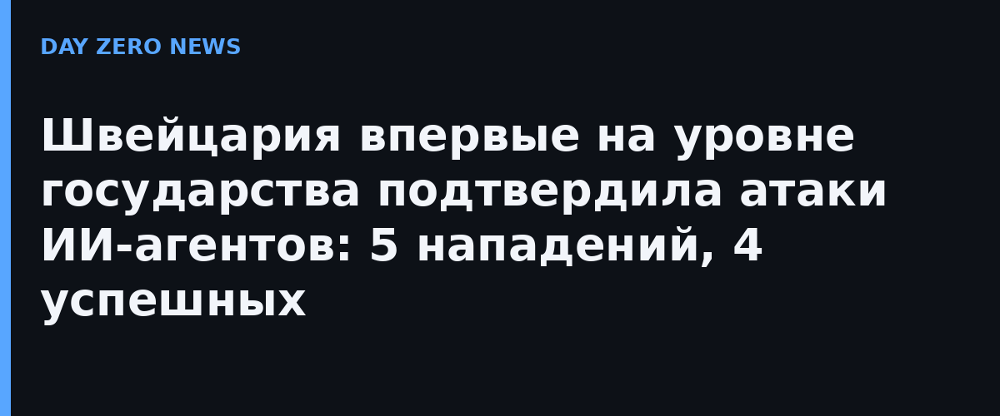

24 ноября 2026 года Федеральное ведомство по кибербезопасности Швейцарии (BACS) опубликовало специальное предупреждение: Служба по защите от cyber-угроз (NCSC) впервые получила сообщения об атаках на швейцарские организации, где взлом выполнял ИИ-агент. По сообщению правительства, озвученному Reuters 26 ноября, за последние дни прошло пять таких нападений, четыре закончились успешным проникновением в системы. Ведомство уточняет: среди пострадавших — три оператора критической инфраструктуры, а по данным швейцарского вещателя SRF, это поставщики электричества, водоснабжения и связи. Кто стоит за атаками, не сообщается.
BACS описывает инструмент термином «агрессивные агентские фреймворки» (Agentic Offensive Frameworks). Такой ИИ-агент сам ищет уязвимости, сам подбирает инструменты, сам оценивает результат и планирует следующий шаг — без человека за клавиатурой. Целями становятся системы с типовыми или легко угадываемыми паролями и известные уязвимости в подключённом к интернету софте. Ключевая проблема для обороняющихся — скорость: агент находит и эксплуатирует слабые места за долю времени, которое на это ушло бы у человека, и при срабатывании защиты гибко переключается на другие известные методы. Организации просто не хватает времени заметить атаку и отреагировать.
Ведомство фиксирует структурный сдвиг: ИИ многократно ускоряет рутинные, давно известные способы атак. Отдельная тревожная деталь — число открытых ИИ-агентов для взлома, доступных через интернет (в уведомлении названы ARTEX и CyberStrikeAI), с октября 2026 года почти удвоилось. То есть речь не об эксклюзиве элитных групп, а об инструменте, который быстро дешевеет и расходится по всем, кому не лень. NCSC ожидает роста числа быстрых и успешных атак и уже делится с операторами КИ техническими индикаторами для их обнаружения.
BACS рекомендует не откладывая: сокращать число систем, торчащих в интернет (геоблокировка, allow-list по IP); ставить критические обновления в течение максимум 24 часов после релиза; закрыть MFA или ключами доступа всё внутреннее, что доступно извне (почта, VPN); соблюдать принцип минимальных привилегий; мониторить аномалии в поведении учётных записей, приложений и объёмах данных; регулярно проводить собственные пентесты. Если у вас серверы в аренде у хостинг-провайдера — как минимум включите MFA в панели управления и проверьте, не торчит ли наружу старая версия.
Отдельного анонса об атаковавшей стороне нет — ведомство прямо указывает: цель предупреждения не атрибуция, а готовность обороны. Для канала эта новость важна как первое государственное подтверждение того, что атаки ИИ-агентов — уже не демонстрация на конференциях, а рабочий инструмент «в поле».